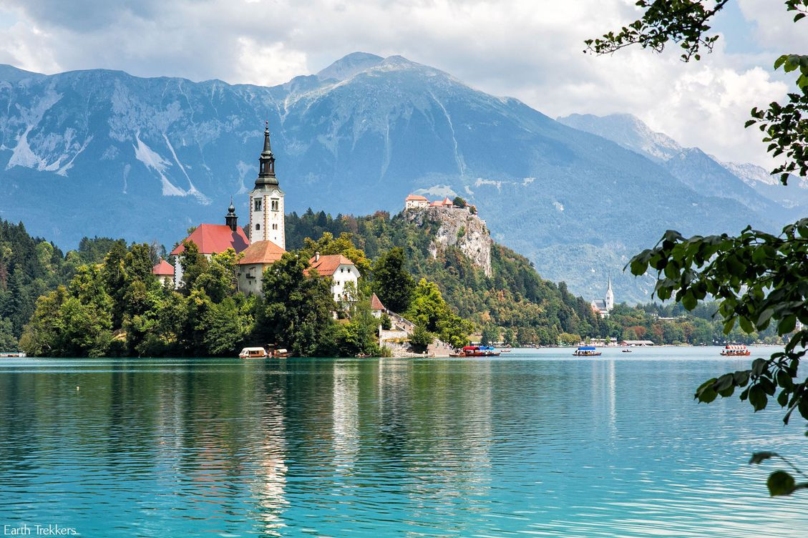

The traditional transportation to Bled Island is a wooden boat known as a pletna. The word pletna is a borrowing from Bavarian German Plätten 'flat-bottomed boat'. Some sources claim the pletna was used in Lake Bled as early as 1150 AD, but most historians date the first boats to 1590 AD. Similar in shape to Italian gondolas, a pletna seats 20 passengers. Modern boats are still made by hand and are recognizable by their colorful awnings. Pletna oarsman employ the stehrudder technique to propel and navigate boats across the lake using two oars. The role of the oarsman dates back to 1740, when Empress Maria Theresa granted 22 local families exclusive rights to ferry religious pilgrims across Lake Bled to worship on Bled Island. The profession is still restricted. Many modern oarsman descend directly from the original 22 families.
The lake is of mixed glacial and tectonic origin. It is 2,120 m (6,960 ft) long and 1,380 m (4,530 ft) wide, with a maximum depth of 29.5 m (97 ft), and it has a small island. The lake lies in a picturesque environment, surrounded by mountains and forests. Medieval Bled Castle stands above the lake on the north shore and has a museum. The Zaka Valley lies at the west end of the lake.
The World Rowing Championships in 1966, 1979, 1989, and 2011 were held at Lake Bled.
Bled Island
The lake surrounds Bled Island (Blejski otok). The island has several buildings, the main one being the pilgrimage church dedicated to the Assumption of Mary (Cerkev Marijinega vnebovzetja), built in its current form near the end of the 17th century, and decorated with remains of Gothic frescos from around 1470 in the presbyterium and rich Baroque equipment. The church has a 52 m (171 ft) tower and there is a Baroque stairway dating from 1655 with 99 stone steps leading up to the building. The church is frequently visited and weddings are held there regularly. Traditionally it is considered good luck for the groom to carry his bride up the steps on the day of their wedding before ringing the bell and making a wish inside the church.The traditional transportation to Bled Island is a wooden boat known as a pletna. The word pletna is a borrowing from Bavarian German Plätten 'flat-bottomed boat'. Some sources claim the pletna was used in Lake Bled as early as 1150 AD, but most historians date the first boats to 1590 AD. Similar in shape to Italian gondolas, a pletna seats 20 passengers. Modern boats are still made by hand and are recognizable by their colorful awnings. Pletna oarsman employ the stehrudder technique to propel and navigate boats across the lake using two oars. The role of the oarsman dates back to 1740, when Empress Maria Theresa granted 22 local families exclusive rights to ferry religious pilgrims across Lake Bled to worship on Bled Island. The profession is still restricted. Many modern oarsman descend directly from the original 22 families.